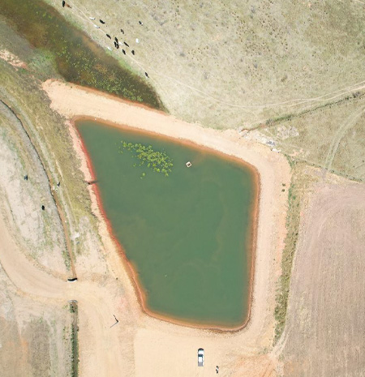
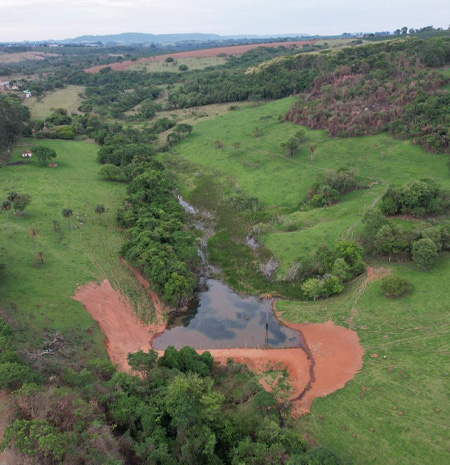
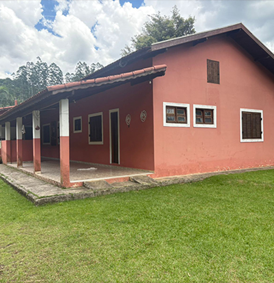
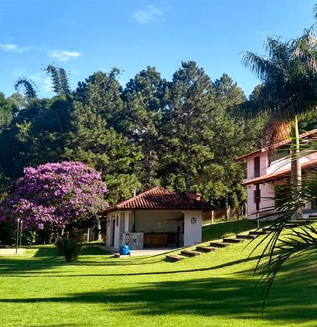
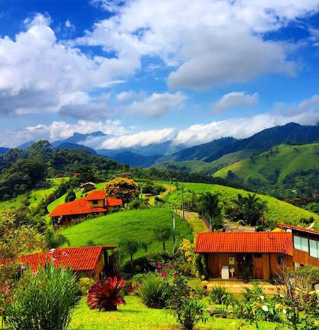
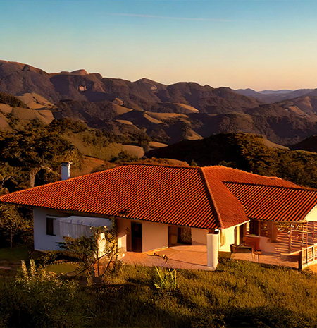
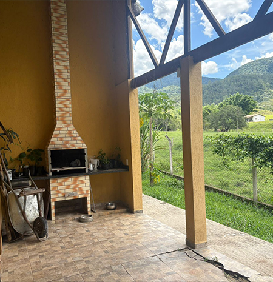
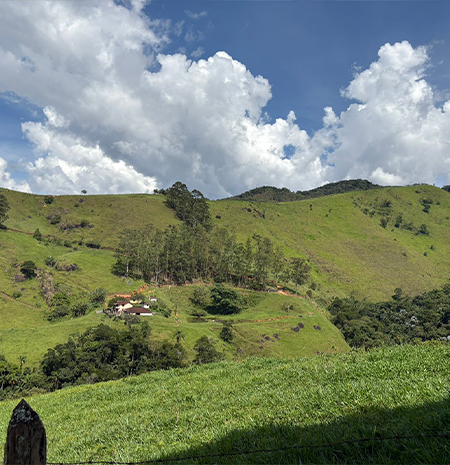

Na ETCA, integramos precisão técnica, visão estratégica e
responsabilidade ambiental para oferecer soluções completas em Engenharia, Topografia e
Consultoria Ambiental. Atuamos com rigor técnico, confiabilidade de dados e compromisso com a
qualidade em todas as etapas dos nossos projetos.
Contamos com uma equipe altamente qualificada e utilizamos tecnologias de ponta para desenvolver
projetos de engenharia personalizados, realizar levantamentos topográficos detalhados e prestar
consultorias ambientais alinhadas às exigências legais e aos princípios da sustentabilidade.
Nosso propósito é entregar resultados seguros, eficientes e responsáveis, contribuindo para o
desenvolvimento de projetos sólidos e ambientalmente conscientes.
Garantimos medições e análises confiáveis, que servem como base sólida para qualquer projeto
Utilizamos tecnologia avançada e visão estratégica para transformar desafios em resultados eficientes.
Atuamos com transparência e responsabilidade, entregando soluções seguras e consistentes.
Do planejamento à execução, entregamos resultados que garantem segurança, eficiência e respeito ao meio ambiente, sempre com foco nas necessidades do cliente e na valorização de cada empreendimento. Na ETCA, você encontra um parceiro sólido para transformar ideias em projetos concretos, sustentáveis e de alto desempenho. Serviços oferecidos:
Serviço técnico essencial para a correta identificação, medição e certificação de imóveis rurais, realizado conforme as normas do INCRA. Envolve levantamento preciso dos limites da propriedade, elaboração de planta e memorial descritivo georreferenciado, garantindo segurança jurídica, regularização registral e conformidade legal do imóvel.
Serviço técnico destinado à representação precisa do terreno, considerando dimensões, limites, relevo e elementos existentes. Fundamenta projetos, regularizações e aprovações junto a órgãos públicos, garantindo confiabilidade técnica e segurança na tomada de decisões..
Serviço voltado à certificação de imóveis rurais no sistema SIGEF/INCRA, garantindo a compatibilidade entre os limites da propriedade e a base fundiária oficial, viabilizando registros, desmembramentos e regularizações.
Desenvolvimento técnico completo para implantação de loteamentos urbanos e rurais, incluindo estudos, projetos, memoriais e acompanhamento de processos de aprovação, assegurando viabilidade legal, urbanística e técnica do empreendimento.
Elaboração de projetos técnicos de infraestrutura, contemplando sistemas viários, drenagem, redes e demais elementos essenciais, com foco em funcionalidade, durabilidade e atendimento às normas vigentes.
Desenvolvimento de projetos residenciais técnicos e funcionais, alinhados às normas legais, às características do terreno e às necessidades do cliente, garantindo segurança, conforto e viabilidade construtiva.
Atuação técnica especializada em processos de regularização fundiária urbana e rural, envolvendo análises documentais, levantamentos, memoriais e suporte técnico, com foco na segurança jurídica do imóvel.
Serviço técnico destinado à correção de áreas, medidas e confrontações do imóvel, quando identificadas divergências entre a situação real e os registros oficiais, possibilitando a regularização junto ao cartório de registro de imóveis.
Elaboração de estudos e documentos técnicos necessários para a divisão de um imóvel em unidades menores, atendendo às exigências legais, urbanísticas e registrais do município.
Serviço técnico voltado à unificação de dois ou mais imóveis contíguos, com elaboração de plantas, memoriais e suporte técnico para regularização junto aos órgãos competentes e cartório.
Elaboração e regularização do Cadastro Ambiental Rural, com análise técnica do imóvel, conferência de áreas de preservação permanente, reserva legal e apoio em eventuais pendências junto aos órgãos ambientais.
Assessoria técnica para solicitação de autorização de corte de árvores isoladas, com levantamento, documentação e acompanhamento do processo junto ao órgão ambiental competente.
Elaboração de declarações ambientais simplificadas, atendendo às exigências legais para regularização de atividades e intervenções de baixo impacto ambiental.
Estudos técnicos e condução do processo de realocação de reserva legal, garantindo conformidade com a legislação ambiental e aprovação pelos órgãos competentes.
Preparação e acompanhamento do processo de obtenção do DAIA para intervenções ambientais, assegurando atendimento às normas legais e técnicas vigentes.
Atuação técnica na regularização de intervenções ambientais já executadas, com elaboração de documentação corretiva e acompanhamento junto aos órgãos ambientais.
Elaboração e protocolo do cadastro de plantio e comunicação de colheita, atendendo às exigências ambientais para atividades florestais e agrícolas.
Assessoria completa para obtenção de outorga de uso de recursos hídricos em âmbito estadual e federal, com estudos técnicos e acompanhamento do processo.
Elaboração e regularização do cadastro de uso insignificante de recursos hídricos, conforme critérios legais e exigências dos órgãos gestores.
Preparação e envio da DAURH, com levantamento de dados e atendimento às obrigações anuais junto aos órgãos de gestão de recursos hídricos.
Condução completa do processo de licenciamento ambiental, desde a análise inicial até a obtenção das licenças necessárias para implantação ou operação do empreendimento.
Assessoria técnica e administrativa para parcelamento e conversão de multas ambientais, buscando soluções legais e redução de impactos ao empreendimento.
Conheça alguns materiais já produzidos pela ETCA e detalhes técnicos sobre os serviços




Confira nossos imóveis disponíveis para venda. Clique para solicitar mais informações.

Sítio Boa Vista – Monte Santo de Minas/MG
Área de 12 hectares, com topografia levemente ondulada, pastagem formada e pequeno
açude. Conta com casa sede simples, energia elétrica e acesso fácil.

Fazenda Santa Helena – Monte Santo de Minas/MG
Propriedade de 85 hectares, totalmente georreferenciada, destinada à produção de café.
Dispõe de terreiro asfaltado, tulha, secadores e estrutura completa.

Casa Jardim Aeroporto – Monte Santo de Minas/MG
Casa moderna com 3 quartos (1 suíte), área gourmet completa, garagem coberta e fino
acabamento. Localizada em bairro residencial tranquilo e seguro.

Fazenda Campo Alegre – Monte Santo de Minas/MG
Propriedade de 120 hectares, voltada para pecuária de corte. Possui pastagem bem
dividida, cercas novas, curral completo e represas para abastecimento de animais.

Lote Residencial Ville – Monte Santo de Minas/MG
Excelente lote com 300 m², topografia plana, pronto para construir. Infraestrutura
completa com asfalto, água, esgoto e iluminação pública.

Fazenda Morro Alto – Monte Santo de Minas/MG
Área de 200 hectares, com relevo variado e aptidão para agricultura e pecuária.
Estrutura com casa sede ampla, casas para funcionários e barracão de máquinas.


Nossa equipe é multidisciplinar, formada por engenheiros, topógrafos, técnicos e consultores ambientais. Cada profissional reúne vasta experiência prática e atualização constante, garantindo soluções seguras, eficientes e em total conformidade com a legislação vigente.
Trabalhamos de forma integrada para oferecer o melhor suporte aos nossos clientes, desde a análise de viabilidade técnica até a regularização final de cada empreendimento, com qualidade, compromisso e responsabilidade socioambiental.
Somos um time de profissionais capacitados para projetar e desenvolver soluções eficientes
Saiba mais Entre em contatoConfira as mais novas notícias e novidades da empresa em nossas redes sociais.
Nosso time está preparado para dar o suporte necessário para o seu projeto. Entre em contato.
Rua Dr. Aristides Cunha 320
Centro - Monte Santo de Minas - MG
(35) 99809-9671
contato@grupoetca.com.br
etcatopografia@yahoo.com.br
Segunda - Sexta:
07:30h às 17:00h